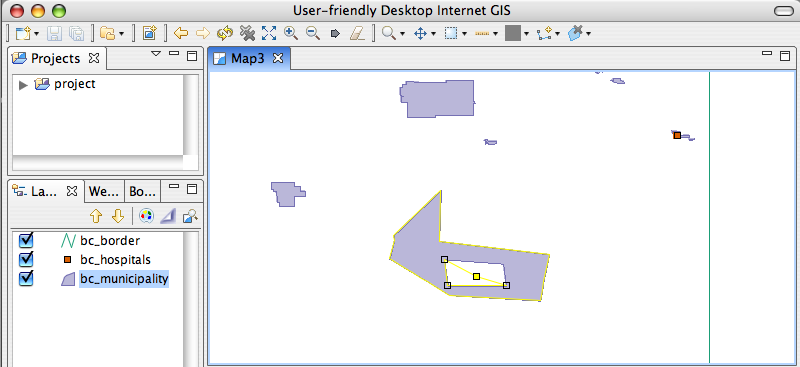

Hole Cutter¶
Hole Cutter/Editor – Cannot resolve external resource into attachment.¶
The Hole Cutter tool allows holes to be selected, cut and edited. The hole cutter has the following functionality:
Clicking within an existing polygon will start the creation of a hole. Creating a hole is the same as creating a polygon using the Polygon Tool except that creation is restricted to within the polygon. Notice that the created vertex is within a selected polygon

Clicking an existing hole will select it.
Vertices in selected holes can be moved when in Advanced Edit Mode.
Vertices in selected holes can be added when in Advanced Edit Mode.

Vertices in selected holes can be deleted when in Advanced Edit Mode.

As with the Edit Geometry Tool the vertex operations can be performed on multiple vertices at once if many vertices are selected.
Related reference